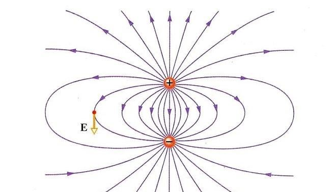

| Atomo |
Un atomo è l'unità fondamentale della materia, composta da un nucleo centrale che contiene protoni (con carica positiva) e neutroni (senza carica), circondato da un insieme di elettroni (con carica negativa) che orbitano attorno al nucleo. |
 |
Idrogeno, Ossigeno,Carbonio, Ferro, Uranio |
| Protone |
Un protone è una particella subatomica che si trova nel nucleo degli atomi e ha una carica elettrica positiva. |
 |
Protone |
| Elettrone |
Un elettrone è una particella subatomica con carica elettrica negativa. Si trova in orbita attorno al nucleo di un atomo, contribuendo a determinare le proprietà chimiche e il comportamento dell'atomo stesso. |
 |
elettrone |
| Neutrone |
Un neutrone è una particella subatomica che fa parte del nucleo di un atomo, insieme ai protoni. A differenza dei protoni, che hanno carica positiva, i neutroni sono senza carica, cioè neutrali. |
 |
elio |
| Campo elettrico |
Un campo elettrico è una regione dello spazio in cui una particella carica sperimenta una forza. Esso è creato da una carica elettrica (positiva o negativa) che può influenzare altre cariche elettriche che si trovano al suo interno. |
 |
carica positiva e negativa |
| Corrente elettrica |
La corrente elettrica è il flusso di cariche elettriche che si muovono attraverso un conduttore, come un filo di rame. La corrente è ciò che permette, ad esempio, a dispositivi elettronici come lampadine e computer di funzionare. |
 |
Batteria o presa elettrica |